3D RoI-aware U-Net for Accurate and Efficient Colorectal Tumor Segmentation
#结直肠癌分割📌
-
Cited by: 18
-
Publish Year: 2020
-
Published in: IEEE Transactions on Cybernetics
-
地址：https://ieeexplore.ieee.org/document/9052757
-
Code：https://github.com/huangyjhust/3D-RU-Net
0. Abstract
基于深度学习的方法在 3D 图像分割任务中提供了一个良好的 baseline，但是由于内存的限制，较小的 patch 限制了有效的感受野，影响分割性能。
将 RoI 定位作为前项操作，在速度、目标完整性、减少假阳性（FN）等方面具有多重优势。本篇论文：
-
提出了一种==多任务框架（3D RoI-aware U-Net）==，用于 ROI 定位和区域分割；
-
设计了一个==基于 Dice 的损失函数（MHL）==，用于从全局（RoI 定位）到局部（区域内分割）的多任务学习过程。
在 64 例癌症病例上进行实验，结果表明，该方法明显优于传统的方法，具有较强的泛化性、拓展潜力，可用于医学图像的其他 3D 目标分割任务。
1. Introduction
基于深度学习的方法在医学图像检测和分割领域处于领先地位，然而，依旧面临着许多挑战：强度特异性弱、缺乏形状特征、缺乏位置先验、类别不平衡，以及在较差的 GPU/CPU-only 上的处理时间过长。除此之外，patch 大小受限于 GPU 显存，扩大感受野和减少降采样过程细粒度丢失是一个至关重要的问题。
✅在医学应用中，由于目标和背景高度相关，因此==全局理解==甚至更为重要。
🚩本篇论文贡献总结如下：
-
提出一种新的联合 RoI 定位-分割框架（3D RoI-aware U-Net），具有如下优势：fast RoI localization；target completeness； large effective receptive field；easy-to-train；detail-preserving；end-to-end；volume-to-volume segmentation。
-
设计的混合损失函数（Dice formulated global-to-local multi-task hybrid loss, MHL）帮助网络既处理大体积的小目标，又专注于准确识别局部 RoI 中的边界。
-
通过实验验证了所提出的框架的有效性、通用性；
2. Related Work
现有的 3D 图像病变检测和分割方法一般可以分为：基于局部的模型（part based models）和 non-joint localization-segmentation based methods。
-
part based：FCN、V-Net，有效感受野有限。
-
non-joint localization-segmentation based：RoI 定位模块作为独立的部分，外部模块 Selective Search、Multiscale Combinatorial Grouping、FPN 提取候选区域；
上述两种方式存在的问题：使用基于 patch 的分割无法解决感受野有限的问题；使用独立的外部模块进行候选区域的提取，再独立的 FCN 进行 RoI 分割时，无法共享特征。
联合 RoI 定位-分割模型是一种很有前景的发展，共享 backbone 来实现区域候选、区域分类和区域内分割，消除了冗余特征提取。
-
Multi-task Network Cascades
-
Mask R-CNN: FPN
类别不平衡问题：
- V-Net：Dice loss
- Deep Contour-aware Network
- Multilevel Contextual 3D CNNs
- DeepMedic
- …
3. Methodology
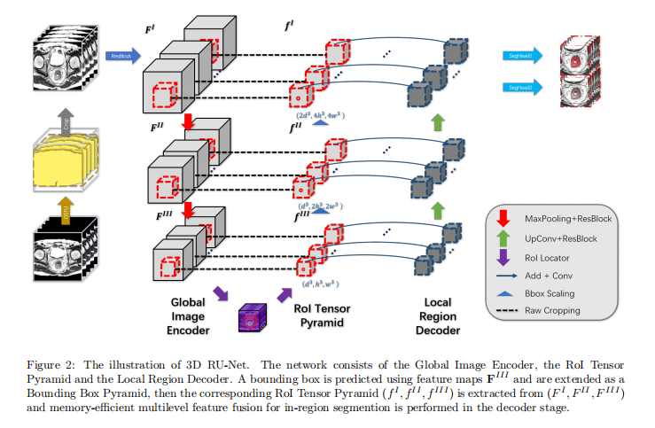
3D RU-Net 结构如上图所示。
-
将整个 image volumes 输入 ==Global Image Encoder==，进行多层次编码；
-
采用编码器专用的 ==RoI locator== 进行 RoI 定位；
-
利用 ==RoI Pyramid Layer== 从多尺度特征图中裁剪区域内特征张量，获得多尺度的 RoI 区域，图中称为 RoI Tensor Pyramid $(f^I, f^{II}, f^{III})$；
-
设计一个 ==Local Region Decoder== 来进行多级特征融合，用于高分辨率癌症病灶分割。
3.1 Main Modules
（1）Global Image Encoder
谨慎设计 3D backbone feature extractor 以避免 GPU 内存溢出和过拟合。构建一个紧凑的仅有编码器的网络，名为 Global Image Encoder，用于处理 whole volume images。
ResBlocks + MaxPooling 堆叠。
Residual Block:
- 3 convolutional layer
- 3 Instance Normalization (batch size = 1)
- 3 ReLU
- Skip Connection
（2）RoI Locator
RoI Locator 是一个模板，以特征图 $F^{III}$ 作为输入，得到 $Bbox^{III}$ 输出。任何采用纯编码骨干的目标检测方法都可以被采用。
由于数量有限的训练样本的长宽比多样性，学习准确的边界框可能是困难的，建议充分利用可用的体素级掩码。为了解决前景与背景比例极不平衡的问题，采用基于 Dice 的损失来训练 ROI Locator。
进行快速的三维连通性分析（Fast 3D connectivity analysis）计算出所需的 Bounding Box（$Bbox^{III}$）。
📌**（3）==RoI Pyramid Layer==**
从每个特征尺度提取一组多层次的特征张量，充分利用多尺度特征。
为了提取检测目标的 RoI Tensor Pyramid，首先从(2) RoI Locator 计算得到的边界框（Bounding box）$Bbox^{III}=(z^3, y^3, x^3, d^3, h^3, w^3)$ ，公式(1)构建 Bounding Box Pyramid $(Bbox^{I}, Bbox^{II}, Bbox^{III})$。
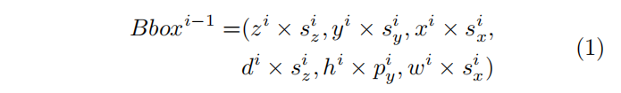
- $(s_{z}^{i}, s_{y}^{i}, s_{x}^{i})$ 表示 $MaxPooling^{i}$ 的 stride；
得到了 Bounding Box Pyramid $(Bbox^{I}, Bbox^{II}, Bbox^{III})$ 后，从 $F^{I},F^{II}, F^{III}$ 中裁剪出 RoI Tensor Pyramid $(f^I, f^{II}, f^{III})$。
（4）Local Region Decoder
得到了 RoI Tensor Pyramid $(f^I, f^{II}, f^{III})$ 之后，构建一个名为 Local Region Decoder 的区域内分割网络，这个网络融合了多尺度的特征。
3.2 Loss Function design
文章的另一个核心点在于 ==Dice-based Multi-task Hybrid Loss Function (MHL)== 的设计。
上图的网络结构属于多任务学习（Localization + Segmentation），Global Image Encoder 主要面临类别不平衡问题；而 Local Region Decoder 则是目标区域的精确边界分割问题。
（1）Dice Loss
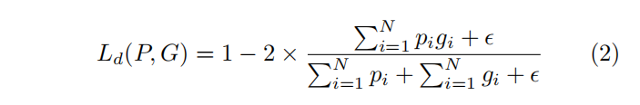
- N voxels
- $p_i \in P$ ：predicted volume
- $g_i \in G$：ground truth volume
- $\epsilon = 10^{-4}$ ：平滑参数
（2）Dice Loss for Global Localization
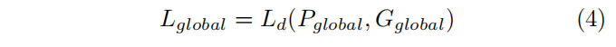
- $P_{global}$ and $G_{global}$ denotes predictions of the localization top and down-sampled annotations.
- ❓这个我不太明白。我的理解是不同的检测方法，这是只是提供了一个范式。
（3）Dice-based Contour-aware Loss for Local Segmentation
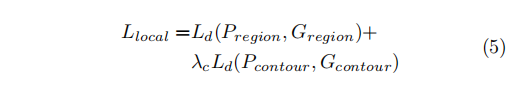
- Contour 表示边轮廓。（3D 空间中轮廓标签的极端稀疏性）；
- 在分割的输出端增加一个额外的由 Sigmoid 激活的 1 × 1 × 1 卷积层来预测轮廓体素，并与区域分割任务并行训练；
- $\lambda_c = 0.5$，辅助任务的权重，确保区域分割任务占主导地位。
===> 最后得到总的损失函数，Dice-based Multi-task Hybrid Loss Function (MHL)：
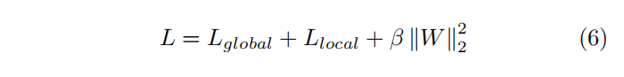
- $\beta = 10^{-4}$
3.3 多感受野模型集成
本文提出采用多感受野模型集成策略，融合结构相同但感受野设置不同的模型。如下图，将三个网络的输出取平均，生成最终的预测。
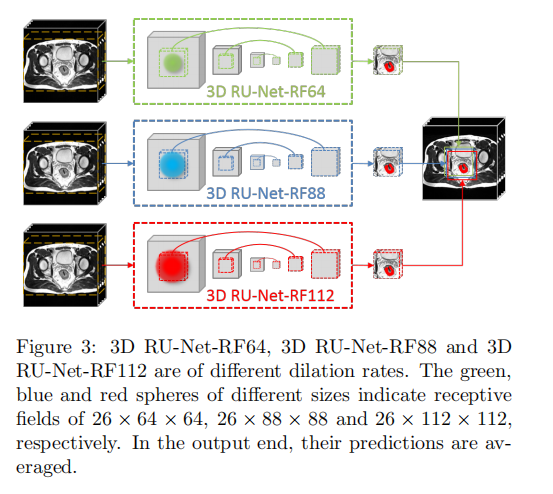
不同感受野模型，实现的方法是控制空洞卷积的 dilation rate。下表感受野为 26 × 64 × 64 为原始的 3D R-U-Net，记为 3D RU-Net-RF-64。
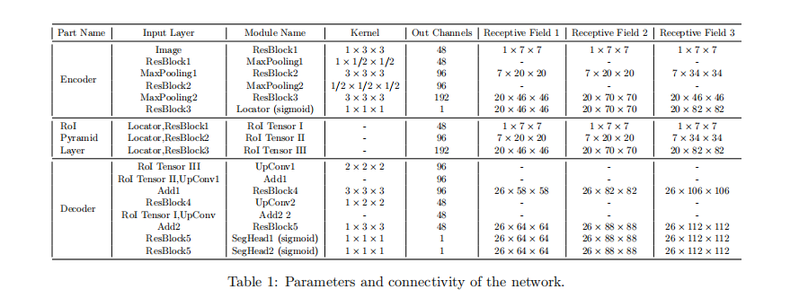
4. Experiments
4.1 数据集和预处理
64 例 MRI 图像，T2 模态。目标区域由经验丰富的放射科医生进行标注，一个 3D 图像通常有一到两个含有癌组织的 RoI。癌组织轮廓标签 contour labels were automatically generated from the region labels of one-voxel thickness using erosion and subtraction operations.
crop 黑边、重采样 4.0 × 2.0 × 2.0 mm、强度归一化。
下图是归一化（intensity-normalized）的效果。
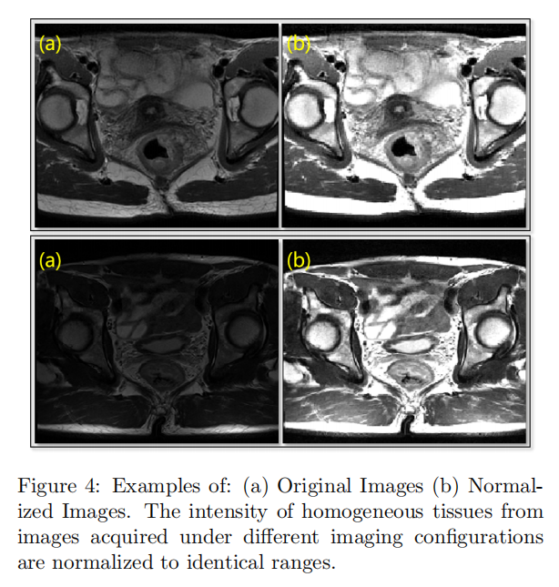
4.2 实现细节
网络结构如 Table 1 所示。
- Optimizer: Adam
- batch size = 1
- 输入的 shape = ？
- learning rate: 10e-4
- L2 norm: 10e-4
- 先训练 RoI Locator，直到评估 Loss 不在降低；
- 再联合训练 RoI Locator 和分割分支。联合训练过程的 Loss 来自 RoI Locator + SegHead1 + SegHead2。
评估指标：Dice Similarity Coefficient (DSC)、Voxel-wise Recall Rate、Average Symmetric Surface Distance (ASD)。
2 块 NVIDIA Titan(12 GB GPU memory)
4.3 实验结果
Table 2（消融学习）、Figure 5、Figure 6
（1）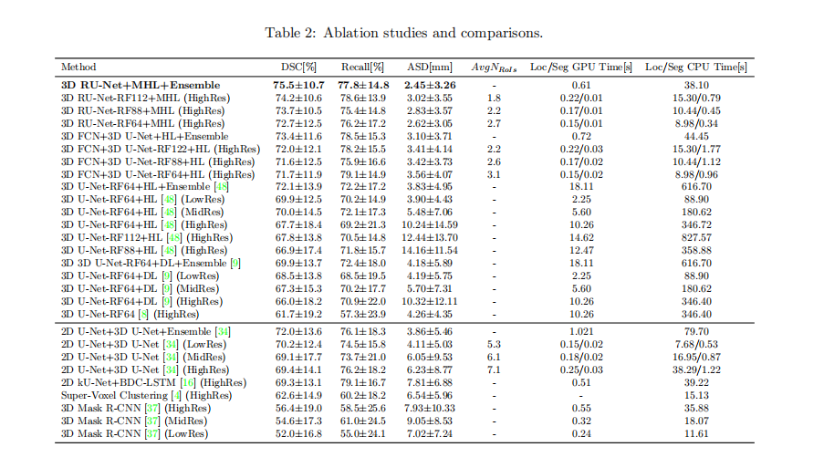
（2）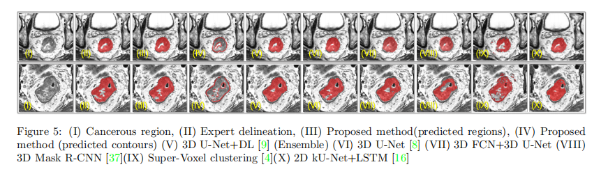
5. Discussion

相比于传统的 Encoder-Decoder 在每个路径上各花费 50%，本文通过构建 Local Region Decoder，GPU 可以将其 90% 的 GPU 内存分配给 Encoder，以处理更大的输入体积，只在分割阶段花费 10% 的内存。因此，可以处理的体积大小被大大的扩大了！（有几率不用预先切 Patch 了）
提出的方法的局限性：
-
模型经常混淆哪个切片开始或结束，这对得分的影响较大（Figure 6）
-
这个困难是与数据相关的，由于癌组织边界的对比度较弱，沿 Z 轴的分辨率较低，开始和结束切片指数的决定可能取决于观察者。
-

- 没有进行实例分割相关的探索
Conclusion
- 提出了联合 RoI localization-segmentation-based 框架（3D RoI-aware U-Net）；
- 强调了将 RoI 定位和区域内分割结合==全局编码特征==的重要性和有效性；
- 提出多任务混合损失(MHL)来平滑训练过程；
- 实验结果表明，该方法在速度和准确性方法具有较大优势；
- 原则上，此框架具有良好的可拓展性，可以用于其他医学图像分割任务。